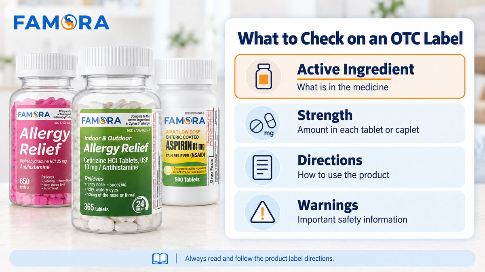

What is an active ingredient? In simple terms, it is the substance in a medicine responsible for the product’s intended therapeutic effect. On an over-the-counter medicine, its name and strength appear near the top of the Drug Facts label.
The product name and front label may be the first things you notice when shopping for OTC medicine. However, checking the active ingredient helps you compare the ingredient, strength, package count, directions, and warnings more carefully.
What Does the Active Ingredient Tell You?
The active ingredient identifies the substance responsible for the medicine’s intended effect. Even when the name is familiar, read the complete label.
According to the FDA’s guide to OTC Drug Facts labels, the active ingredient section also states the amount of that substance in each dosage unit, such as each tablet or caplet.
“Purpose” identifies the product category, while “Uses” describes what it is intended to address. Directions and warnings explain how it should—and should not—be used.
Why does this matter when comparing OTC products? Brand names and front-label claims can look similar even when formulas differ. Checking the active ingredient helps you see whether you are comparing similar products or two different medicines. It can also alert you to possible duplication when more than one product in your medicine cabinet contains the same ingredient.
Active Ingredients vs. Inactive Ingredients
OTC labels may also include a section called Inactive Ingredients. These substances are not included for the product’s intended therapeutic effect. Depending on the formulation, they may help form a tablet, add color or flavor, bind ingredients, or support the product’s stability and delivery.
The distinction is useful, but “inactive” does not mean irrelevant to every shopper. Someone with an allergy or sensitivity may need to review this section carefully. When comparing two products, start with the active ingredient and strength, then check the inactive ingredients if you have specific sensitivities or questions. A pharmacist or healthcare professional can help you interpret the list.
The active ingredient remains the best starting point because it connects directly to the product’s purpose and labeled uses. The inactive ingredient list provides additional formulation information rather than replacing the directions, warnings, or other parts of the Drug Facts panel.
Where Is the Active Ingredient on an OTC Label?
Turn the package or bottle until you find the panel titled Drug Facts. The active ingredient is normally listed near the top, with its amount in each dosage unit. The product’s purpose usually appears beside it.
This standardized order is helpful when package designs differ. Instead of searching across marketing claims on the front, you can go directly to the same core sections on each OTC label.
A simple reading order is:
- Find the active ingredient and strength.
- Review the purpose and uses.
- Read the directions, including dosage and age guidance.
- Read all warnings.
- Check the package count and expiration information.
Do not stop after finding an ingredient you recognize. Products in the same category can have different ingredients, strengths, directions, or warnings. Labels can also change, so review the Drug Facts panel each time.
Active Ingredient, Strength, and Count Are Different
These details may appear close together on the package or product page, but they do not mean the same thing.
- Active ingredient: The substance responsible for the medicine’s intended effect.
- Strength: The amount of active ingredient in each dosage unit, commonly shown in milligrams for tablets and caplets.
- Count: The total number of tablets or caplets in the package.
A higher strength does not automatically make a medicine a better choice. Likewise, a 365-tablet bottle does not mean everyone should take one tablet daily. Count is a packaging detail, not a dosage recommendation. Use only the label and, when appropriate, professional guidance to determine how a medicine is taken.

What to check on an OTC label: active ingredient, strength, directions, and warnings.
Examples From Famora’s OTC Lineup
Famora’s current lineup shows how ingredient, strength, and count communicate different information.
Diphenhydramine HCl 25 mg Allergy Relief — 650 Count
The active ingredient is Diphenhydramine HCl, the strength is 25 mg, and the bottle contains 650 caplets. It is an OTC antihistamine option for labeled allergy symptoms. Review the directions, age guidance, and drowsiness-related warnings.
Cetirizine HCl 10 mg 24-Hour Allergy Relief — 365 Tablets
The active ingredient is Cetirizine HCl, the strength is 10 mg, and the bottle contains 365 tablets. Cetirizine and diphenhydramine are both antihistamines, but they are different ingredients. Review their labels separately rather than treating them as interchangeable.
Low Dose Aspirin 81 mg Enteric Coated Tablets — 500 Count
The active ingredient is Aspirin, the strength is 81 mg, and the package contains 500 enteric coated tablets. Use this adult OTC aspirin only as directed. Speak with a qualified healthcare professional before considering daily, long-term, or heart-related use.
These examples show why the active ingredient is a starting point, not the entire decision.
Why Directions and Warnings Complete the Picture
The directions explain how much to take, how often to take it, how long to use it, and which age instructions apply. Never create a dosage routine from the strength or package count alone.
The warnings may explain when not to use the product, when to ask a doctor or pharmacist before use, which interactions or health conditions matter, and when to stop use. They can differ even between products in the same general category.
Familiarity does not make these sections optional. Read them before use.
A Quick Label Check Before You Buy
Before purchasing an OTC product in a store or online, ask:
- What is the active ingredient?
- What is the strength in each dosage unit?
- What are the labeled purpose and uses?
- What do the directions say?
- What warnings and age guidance apply?
- How many tablets or caplets are included?
When shopping online, review label images and Drug Facts information instead of relying on the title, front image, price, or brand. Our guide to what to compare before reordering OTC medicine on Amazon provides a broader checklist.
Make the Label Your Starting Point
Start with the active ingredient, connect it to the purpose and uses, and continue through the directions and warnings. Then consider whether the package count fits your household’s restocking needs.
Famora keeps these details visible across a focused lineup of high-count OTC essentials. Explore the current lineup at Famora.us.
Frequently Asked Questions
The active ingredient is the substance in a medicine responsible for its intended therapeutic effect. On an OTC label, its name and amount per dosage unit appear near the top of the Drug Facts panel.
No. The active ingredient identifies the substance in the medicine. Strength tells you how much of that ingredient is contained in each dosage unit, such as each tablet or caplet.
No. Count tells you how many tablets or caplets are in the package. It does not tell you how much or how often to take. Follow the directions on the product label.
Yes. Different products can share an active ingredient, while similar names can contain different ingredients. Check each label and ask a healthcare professional if you are unsure about combining medicines.
Yes. Ingredients, directions, and warnings can change. Read and follow the current product label each time, even when the brand or medicine looks familiar.
Always read and follow the product label directions. Review warnings, dosage instructions, and age guidance before use. If you have questions about whether a product is right for you, consult a healthcare professional.